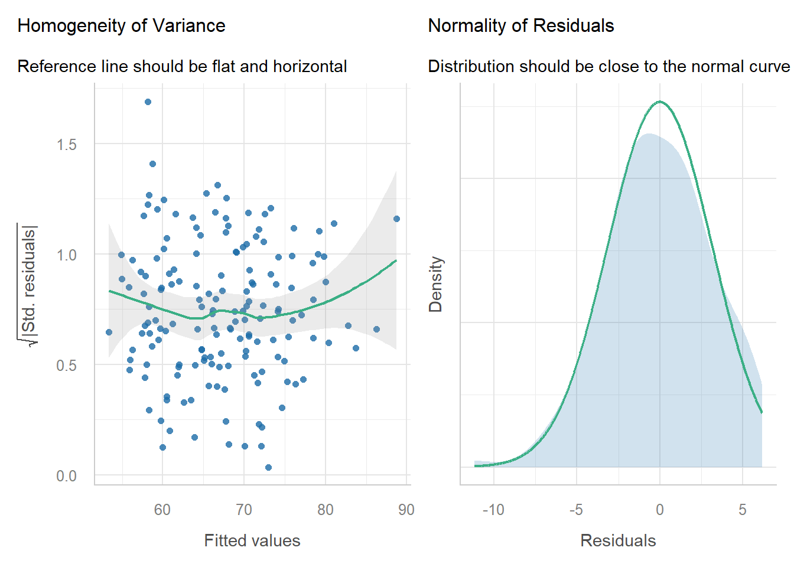

Day 14 Statistical inference and experiment designs
June 23rd, 2026
14.2 Why do we care about standard errors and degrees of freedom?
14.2.1 The hypothesis test explanation
Typically (for a two-tailed test):
- Obtain t test statistic \(t^\star = \frac{\hat\theta}{se(\hat\theta)}\).
- Obtain \(t_c = t_{df, \ \alpha/2}\).
- Obtain \(P(t^\star>t_c)\).
- If \(P(t^\star>t_c) > \alpha\), reject \(H_0\).
14.2.2 The signal & noise explanation
- Each point estimate should be associated to some measure of uncertainty
- How little uncertainty do you need to be convinced?
- What is a 100% confidence interval (CI)? Why is it less useful than a 95% CI?
- A 95% CI tells us the range of values where we would not reject the null (Murtaugh, 2013).
14.2.3 Applied case I – CRD
A group of scientists ran an experiment to answer whether swine diets can affect the Serum haptoglobin concentration. The treatment structure was a \(6 \times 2\) factorial with Diet (6 levels) and Moment (2 levels) as the treamtment factors. The design structure was a CRD with 16 repetitions.
The scientists measured Serum haptoglobin (mg/dL) as the response variable and wish to maintain this metric as high as possible.
url <- "https://raw.githubusercontent.com/stat720/summer2026/refs/heads/main/data/blood_study_pigs.csv"
df <- read.csv(url) |>
mutate(Trt = as.factor(Trt), Day = as.factor(Day))Because this is a CRD, the model is
\[y_{ijk} = \mu_0 + T_i + D_j +(T\times D)_{ij} + \varepsilon_{ijk}, \\ \varepsilon_{ijk} \sim N(0, \sigma^2).\]
m <- lm(Serum_haptoglobin_mg.dL ~ Trt*Day, data = df)
performance::check_model(m, check = c("normality", "homogeneity"))
## Anova Table (Type II tests)
##
## Response: Serum_haptoglobin_mg.dL
## Sum Sq Df F value Pr(>F)
## Trt 81720 5 80.049 < 2.2e-16 ***
## Day 69495 1 340.369 < 2.2e-16 ***
## Trt:Day 24352 5 23.854 < 2.2e-16 ***
## Residuals 36751 180
## ---
## Signif. codes: 0 '***' 0.001 '**' 0.01 '*' 0.05 '.' 0.1 ' ' 114.2.4 Biological significance (and others) matter as much as statistical significance
## NOTE: Results may be misleading due to involvement in interactions
How is the story behind ANOVA and the marginal means so different?
14.2.5 Applied case II – RCBD
- Field experiment studying the effect of potassium on corn yield.
- One treatment factor: Potassium fertilizer (one-way treatment structure).
- Randomized Complete Block Design with 4 repetitions (design structure).
url <- "https://raw.githubusercontent.com/stat720/summer2026/refs/heads/main/data/cochrancox_kfert.csv"
df2 <- read.csv(url) |>
transmute(K2O_lbac = as.factor(K2O_lbac), rep = as.factor(rep), yield)Because this is an RCBD, the model is
\[y_{ij} = \mu_0 + T_i + b_j + \varepsilon_{ij}, \\ \varepsilon_{ij} \sim N(0, \sigma^2).\]
Blocks: fixed of random?
- The assumptions behind \(b_j\) vary:
- Fundamentals of mixed models
- Assumption behind blocks as fixed effects: there is a ‘true’ block effect out there.
- Assumption behind blocks as random effects:
- Confidence intervals of the means differ depending on the model:
- Blocks as fixed: \(\hat\mu \pm t \cdot \sqrt{\frac{\sigma_{\varepsilon}^2 }{b}}\)
- Blocks as random: \(\hat\mu \pm t \cdot \sqrt{\frac{\sigma_{\varepsilon}^2 + \sigma^2_{b}}{b}}\)
- Confidence intervals of the means differences don’t differ depending on the model:
- Blocks as fixed/as random: \(\hat\mu \pm t \cdot \sqrt{\frac{2 \sigma_{\varepsilon}^2 }{b}}\)
Blocks as fixed:
m_fixed <- lm(yield ~ K2O_lbac + rep, data = df2)
emmeans(m_fixed, ~ K2O_lbac, contr = list(c(1, -1, 0, 0, 0)))## $emmeans
## K2O_lbac emmean SE df lower.CL upper.CL
## 36 7.92 0.121 8 7.64 8.19
## 54 8.12 0.121 8 7.84 8.40
## 72 7.81 0.121 8 7.53 8.09
## 108 7.58 0.121 8 7.30 7.86
## 144 7.52 0.121 8 7.24 7.79
##
## Results are averaged over the levels of: rep
## Confidence level used: 0.95
##
## $contrasts
## contrast estimate SE df t.ratio p.value
## c(1, -1, 0, 0, 0) -0.203 0.171 8 -1.191 0.2676
##
## Results are averaged over the levels of: repBlocks as random:
m_random <- lmer(yield ~ K2O_lbac + (1|rep), data = df2)
emmeans(m_random, ~ K2O_lbac, contr = list(c(1, -1, 0, 0, 0)))## $emmeans
## K2O_lbac emmean SE df lower.CL upper.CL
## 36 7.92 0.162 5.57 7.51 8.32
## 54 8.12 0.162 5.57 7.72 8.52
## 72 7.81 0.162 5.57 7.41 8.21
## 108 7.58 0.162 5.57 7.18 7.98
## 144 7.52 0.162 5.57 7.11 7.92
##
## Degrees-of-freedom method: kenward-roger
## Confidence level used: 0.95
##
## $contrasts
## contrast estimate SE df t.ratio p.value
## c(1, -1, 0, 0, 0) -0.203 0.171 8 -1.191 0.2676
##
## Degrees-of-freedom method: kenward-rogerThings to highlight:
- Under an RCBD, se(mean) \(\neq\) se(mean difference).
- Standard errors of the means differ depending on the model:
- Blocks as fixed: \(\sqrt{\frac{\sigma_{\varepsilon}^2 }{b}}\)
- Blocks as random: \(\sqrt{\frac{\sigma_{\varepsilon}^2 + \sigma^2_{b}}{b}}\)
- Standard errors of the means differences don’t differ depending on the model:
- Blocks as fixed/as random: \(\sqrt{\frac{2 \sigma_{\varepsilon}^2 }{b}}\)
14.3 Applied case III – split-plot design
- Designed experiment of barley (70 levels) with fungicide (2 levels) treatments.
- Two treatment factors: barley (70 levels) and fungicide (2 levels). Two-way factorial treatment structure.
- Split-plot design in an RCBD: Fungicide in the whole plot and genotype in the subplot.
## yield block gen fung row bed
## 1 5.89 B1 G54 F1 1 1
## 2 6.17 B1 G44 F1 1 2
## 3 5.68 B1 G68 F1 1 3
## 4 5.85 B1 G59 F1 1 4
## 5 5.80 B1 G61 F1 1 5
## 6 6.01 B1 G67 F1 1 6
## 7 5.89 B1 G45 F1 1 7
## 8 4.53 B1 G10 F2 1 8
## 9 5.32 B1 G27 F2 1 9
## 10 5.36 B1 G60 F2 1 10
## 11 5.10 B1 G53 F2 1 11
## 12 5.51 B1 G57 F2 1 12
## 13 5.15 B1 G58 F2 1 13
## 14 5.30 B1 G48 F2 1 14
## 15 5.65 B2 G22 F1 1 15
## 16 5.38 B2 G45 F1 1 16
## 17 5.36 B2 G21 F1 1 17
## 18 5.71 B2 G36 F1 1 18
## 19 5.83 B2 G27 F1 1 19
## 20 5.48 B2 G68 F1 1 20
## 21 5.55 B2 G64 F1 1 21
## 22 4.83 B2 G27 F2 1 22
## 23 4.43 B2 G05 F2 1 23
## 24 4.72 B2 G45 F2 1 24
## 25 4.85 B2 G43 F2 1 25
## 26 5.08 B2 G70 F2 1 26
## 27 4.82 B2 G63 F2 1 27
## 28 4.73 B2 G55 F2 1 28
## 29 5.86 B3 G36 F1 1 29
## 30 5.41 B3 G65 F1 1 30
## 31 5.58 B3 G33 F1 1 31
## 32 5.18 B3 G38 F1 1 32
## 33 5.65 B3 G56 F1 1 33
## 34 5.39 B3 G44 F1 1 34
## 35 5.46 B3 G29 F1 1 35
## 36 4.68 B3 G12 F2 1 36
## 37 4.71 B3 G09 F2 1 37
## 38 4.64 B3 G37 F2 1 38
## 39 4.56 B3 G17 F2 1 39
## 40 4.62 B3 G10 F2 1 40
## 41 4.57 B3 G34 F2 1 41
## 42 4.63 B3 G43 F2 1 42
## 43 4.88 B4 G41 F2 1 43
## 44 4.53 B4 G24 F2 1 44
## 45 5.10 B4 G65 F2 1 45
## 46 4.96 B4 G11 F2 1 46
## 47 5.02 B4 G47 F2 1 47
## 48 4.69 B4 G28 F2 1 48
## 49 5.11 B4 G12 F2 1 49
## 50 5.50 B4 G13 F1 1 50
## 51 4.91 B4 G14 F1 1 51
## 52 5.47 B4 G22 F1 1 52
## 53 5.02 B4 G46 F1 1 53
## 54 5.13 B4 G02 F1 1 54
## 55 5.38 B4 G67 F1 1 55
## 56 5.25 B4 G52 F1 1 56
## 57 6.08 B1 G37 F1 2 1
## 58 6.23 B1 G23 F1 2 2
## 59 6.19 B1 G69 F1 2 3
## 60 5.96 B1 G51 F1 2 4
## 61 5.74 B1 G15 F1 2 5
## 62 5.97 B1 G50 F1 2 6
## 63 5.86 B1 G53 F1 2 7
## 64 5.67 B1 G33 F2 2 8
## 65 5.28 B1 G50 F2 2 9
## 66 5.04 B1 G21 F2 2 10
## 67 5.44 B1 G07 F2 2 11
## 68 5.46 B1 G37 F2 2 12
## 69 5.95 B1 G54 F2 2 13
## 70 4.67 B1 G01 F2 2 14
## 71 5.66 B2 G51 F1 2 15
## 72 5.88 B2 G48 F1 2 16
## 73 4.40 B2 G04 F1 2 17
## 74 5.55 B2 G16 F1 2 18
## 75 5.37 B2 G30 F1 2 19
## 76 5.34 B2 G42 F1 2 20
## 77 5.85 B2 G23 F1 2 21
## 78 4.73 B2 G15 F2 2 22
## 79 5.08 B2 G22 F2 2 23
## 80 5.25 B2 G46 F2 2 24
## 81 5.46 B2 G40 F2 2 25
## 82 5.28 B2 G12 F2 2 26
## 83 5.44 B2 G57 F2 2 27
## 84 4.31 B2 G04 F2 2 28
## 85 5.91 B3 G57 F1 2 29
## 86 5.31 B3 G30 F1 2 30
## 87 5.97 B3 G19 F1 2 31
## 88 5.59 B3 G13 F1 2 32
## 89 6.45 B3 G03 F1 2 33
## 90 5.61 B3 G69 F1 2 34
## 91 5.36 B3 G45 F1 2 35
## 92 4.98 B3 G56 F2 2 36
## 93 4.58 B3 G24 F2 2 37
## 94 4.57 B3 G15 F2 2 38
## 95 5.19 B3 G18 F2 2 39
## 96 4.86 B3 G11 F2 2 40
## 97 5.17 B3 G47 F2 2 41
## 98 4.94 B3 G55 F2 2 42
## 99 5.25 B4 G22 F2 2 43
## 100 4.89 B4 G21 F2 2 44
## 101 5.24 B4 G53 F2 2 45
## 102 5.36 B4 G57 F2 2 46
## 103 5.01 B4 G49 F2 2 47
## 104 4.77 B4 G10 F2 2 48
## 105 4.71 B4 G02 F2 2 49
## 106 5.59 B4 G68 F1 2 50
## 107 5.71 B4 G37 F1 2 51
## 108 5.75 B4 G15 F1 2 52
## 109 5.11 B4 G49 F1 2 53
## 110 5.61 B4 G48 F1 2 54
## 111 5.75 B4 G60 F1 2 55
## 112 5.64 B4 G66 F1 2 56
## 113 5.71 B1 G02 F1 3 1
## 114 6.30 B1 G62 F1 3 2
## 115 5.70 B1 G21 F1 3 3
## 116 5.63 B1 G57 F1 3 4
## 117 5.76 B1 G32 F1 3 5
## 118 5.73 B1 G43 F1 3 6
## 119 5.89 B1 G17 F1 3 7
## 120 4.84 B1 G49 F2 3 8
## 121 4.90 B1 G30 F2 3 9
## 122 5.41 B1 G29 F2 3 10
## 123 5.65 B1 G19 F2 3 11
## 124 5.35 B1 G39 F2 3 12
## 125 5.60 B1 G52 F2 3 13
## 126 5.03 B1 G26 F2 3 14
## 127 5.63 B2 G53 F1 3 15
## 128 5.53 B2 G62 F1 3 16
## 129 6.66 B2 G03 F1 3 17
## 130 5.50 B2 G31 F1 3 18
## 131 5.22 B2 G34 F1 3 19
## 132 5.79 B2 G13 F1 3 20
## 133 5.25 B2 G63 F1 3 21
## 134 4.89 B2 G32 F2 3 22
## 135 4.28 B2 G14 F2 3 23
## 136 4.63 B2 G29 F2 3 24
## 137 4.43 B2 G24 F2 3 25
## 138 4.76 B2 G26 F2 3 26
## 139 5.10 B2 G17 F2 3 27
## 140 5.11 B2 G38 F2 3 28
## 141 5.45 B3 G42 F1 3 29
## 142 5.47 B3 G15 F1 3 30
## 143 5.42 B3 G39 F1 3 31
## 144 5.48 B3 G05 F1 3 32
## 145 5.31 B3 G34 F1 3 33
## 146 5.80 B3 G07 F1 3 34
## 147 5.52 B3 G32 F1 3 35
## 148 4.86 B3 G21 F2 3 36
## 149 5.13 B3 G60 F2 3 37
## 150 4.39 B3 G45 F2 3 38
## 151 5.07 B3 G70 F2 3 39
## 152 4.87 B3 G08 F2 3 40
## 153 5.71 B3 G13 F2 3 41
## 154 4.79 B3 G46 F2 3 42
## 155 5.20 B4 G60 F2 3 43
## 156 4.57 B4 G34 F2 3 44
## 157 5.28 B4 G09 F2 3 45
## 158 5.29 B4 G50 F2 3 46
## 159 5.30 B4 G70 F2 3 47
## 160 5.33 B4 G27 F2 3 48
## 161 5.01 B4 G45 F2 3 49
## 162 5.72 B4 G32 F1 3 50
## 163 5.88 B4 G59 F1 3 51
## 164 5.67 B4 G34 F1 3 52
## 165 5.08 B4 G24 F1 3 53
## 166 5.82 B4 G39 F1 3 54
## [ reached 'max' / getOption("max.print") -- omitted 394 rows ]Because this is a split-plot design, the model is
\[y_{ij} = \mu_0 + F_i + G_j + (F\times G)_{ij} + b_k + wp_{i(k)} + \varepsilon_{ij}, \\ wp_{i(k)}, \sim N(0, \sigma_{wp}^2) \\ \varepsilon_{ij} \sim N(0, \sigma^2_\varepsilon).\]
- Like before, we can choose either fixed or random for \(b_k\).
- But now, the se(mean) depend on the level we are looking.
For differences at the whole-plot level (fung): \(se(\hat\mu-\mu') = \sqrt{\frac{2(\sigma^2_\varepsilon + g \ \sigma^2_{wp})}{b \cdot g}}\). For differences at the split-plot level (gen): \(se(\hat\mu-\mu') = \sqrt{\frac{2(\sigma^2_\varepsilon)}{b \cdot f}}\).
m3 <- lmer(yield ~ gen*fung + (1|block/fung), data = df3)
emmeans(m3, ~fung, contr = list(c(1, -1)))$contr## contrast estimate SE df t.ratio p.value
## c(1, -1) 0.548 0.0863 3 6.346 0.0079
##
## Results are averaged over the levels of: gen
## Degrees-of-freedom method: kenward-roger## contrast estimate SE df
## c(1, -1, 0, 0, 0, 0, 0, 0, 0, 0, 0, 0, 0, 0, 0, 0, 0, 0, 0, 0, -0.152 0.141 414
## t.ratio p.value
## -1.085 0.2787
##
## Results are averaged over the levels of: fung
## Degrees-of-freedom method: kenward-rogervc <- VarCorr(m3)
sigma2_b <- vc$block[1]
sigma2_wp <- vc$`fung:block`[1]
sigma2_epsilon <- sigma(m3)^2
n_block <- n_distinct(df3$block)
n_fung <- n_distinct(df3$fung)
n_gen <- n_distinct(df3$gen)
#se fung difference
sqrt( 2*(sigma2_epsilon + (n_gen*sigma2_wp)) / (n_block *n_gen) )## [1] 0.086331## [1] 0.1405927